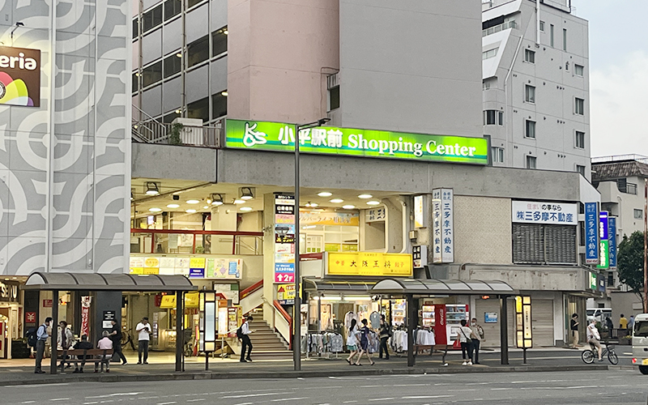
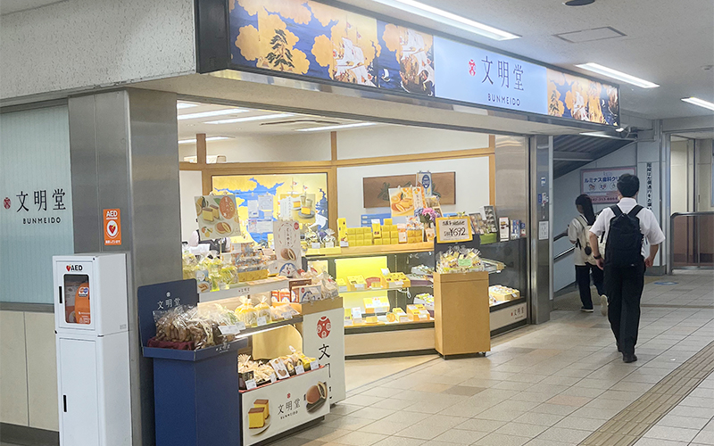
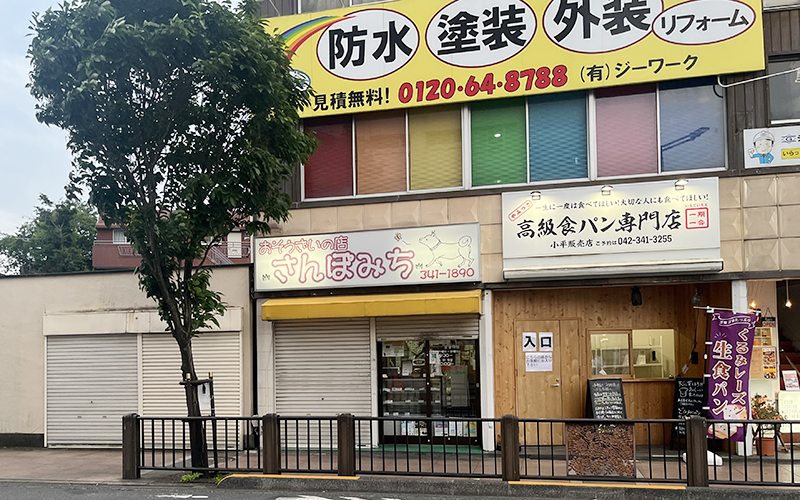

01
小平ショッピングセンター
昭和を感じる小平ショッピングセンターの雰囲気は都心では感じることのできない雰囲気が味わえるので是非足を運んでほしいです。
02
文明堂
駅に文明堂があります。東京発祥ではありませんが、近隣に文明堂がない方は是非お土産として買ってみてほしいです。品数が多くホームからも近いので、なかなか電車が来ない時に寄ってみるのもおすすめです。


03
おそうざいの店さんぽ
コロッケなど売ってるお惣菜のお店があります。撮影した日は閉まっていましたが、メンチカツがボリューミーで美味しかったです。スーパーのお惣菜に比べて衣より具材の比率が高いです。地域密着ならではの低価格で高クオリティな食べ物が食べられて嬉しいです。
混んではいないけど寄り道したい方におすすめです。
新鮮な気持ちになれます！
TOP